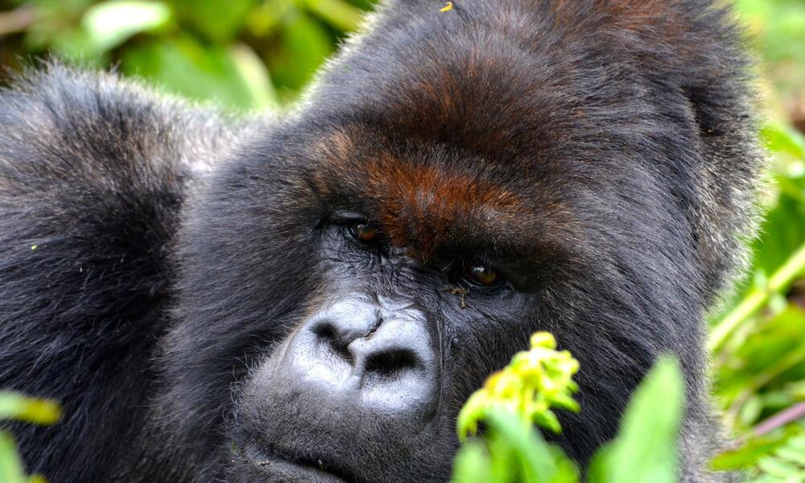
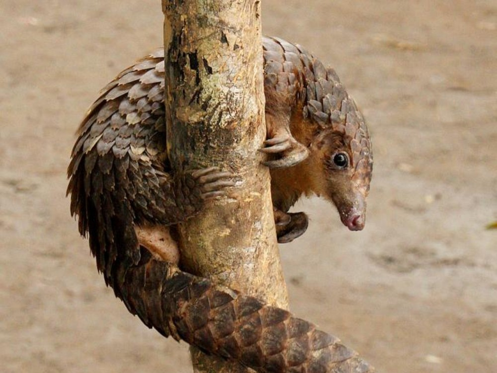
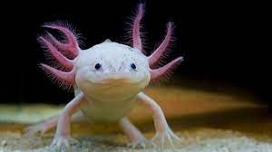
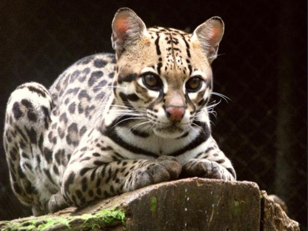
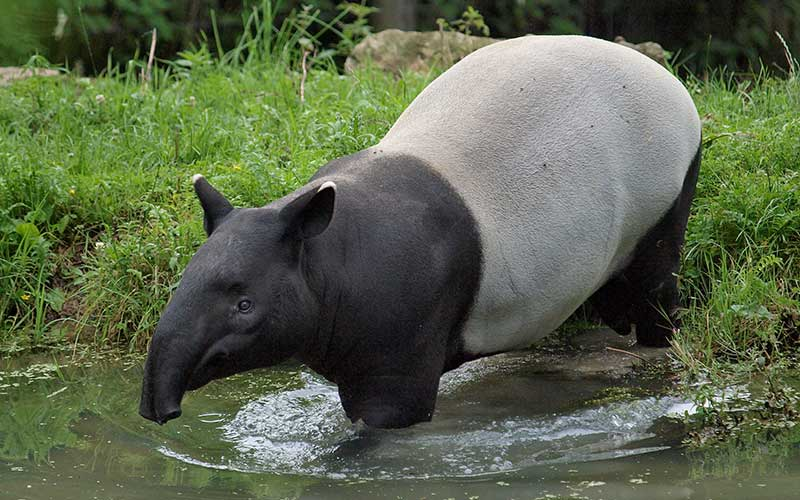

¿Qué son los animales en peligro de extinción?
Una especie está en peligro de extinción cuando todos los representantes de la misma corren el riesgo de desaparecer de la faz de la Tierra.
ALGUNAS CAUSAS
- DESTRUCCIÓN DE SUS HÁBITATS
- TRAFICO ILEGAL
- INTRODUCCIÓN DE ESPECIES EXÓTICAS
- FENÓMENOS DEMOGRÁFICOS Y GÉNETICOS
- CAMBIO CLIMÁTICO
Proceso por el cual un hábitat natural es transformado en un hábitat incapaz de mantener a sus especies originarias
Actividad relacionada con el comercio de bienes derivados de las especies, que genera ciertas ganancias económicas
Consiste en transferir especies a una nueva región, fuera de su área de distribución natural
Una especie se puede volver extinta funcionalmente cuando solo sobrevive una reducidísima cantidad de miembros, que son incapaces de reproducirse debido a problemas de salud, edad, distancia geográfica debido a un muy gran rango de distribución, por falta de individuos de ambos sexo u otras razones.
Se denomina cambio climático a la variación global del clima de la Tierra debido a causas naturales, pero principalmente a la acción humana
ALGUNAS ESPECIES SON:
- Gorila de montaña
- Oso polar
- Pangolin
- Ajolote
- Ocelote
- Tapir
Amenazados por la pérdida de hábitat, la caza furtiva y la transmisión de enfermedades de los humanos.
La pérdida de su hábitat,conflictos con los humanos, la caza insostenible y los impactos generados por la industria.

víctimas del comercio ilegal a gran escala para alimentar la demanda de su carne y de las escamas que los protegen.
la destrucción paulatina que ha sufrido su hábitat natural
la pérdida de su hábitat, la extracción de organismos para su comercialización, la cacería ilegal y la disminución de sus presas.
caza, la destrucción masiva de su hábitat,explotación agraria y forestal
